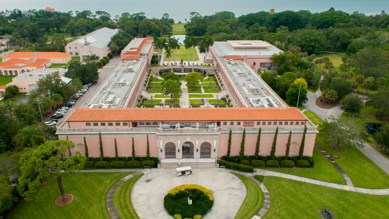
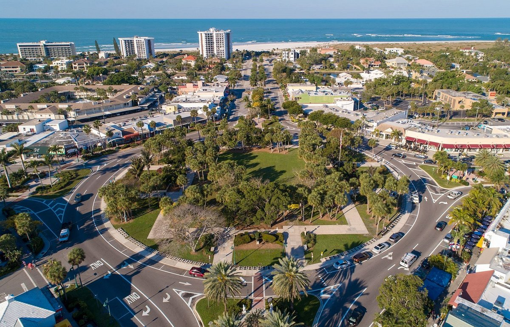
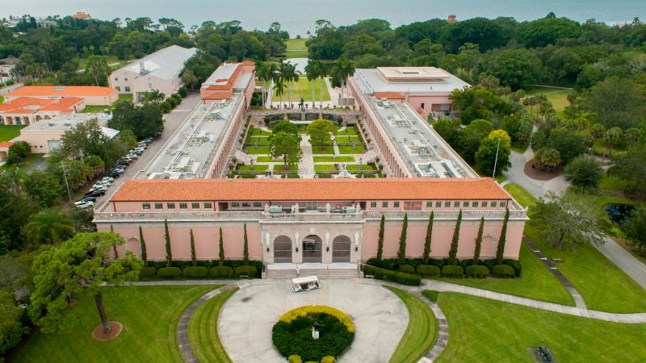
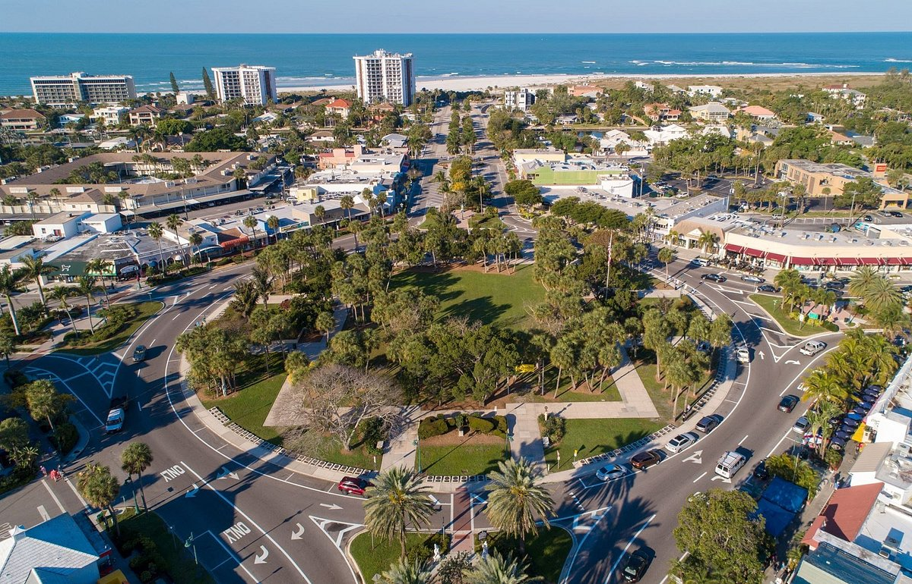

Attractions in Sarasota
Ringling Brothers Museum
Mote Marine Laboratory and Aquarium

St. Armands Circle

| Map | Population | Area | GDP | Primary Language | Year of Founding | Time Zone | Currency |
|---|---|---|---|---|---|---|---|
| Satelite View | 58 Thousand | 24.1 square miles | 18 million | English | 1902 | UTC-5 | US. Dollar |
Ringling Brothers Museum
Mote Marine Laboratory and Aquarium
St. Armands Circle
